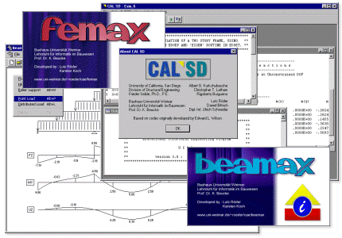

I am an engineering student at
Bauhaus-Universität Weimar and a research assistant
at the professorship Lehrstuhl für Informatik im Bauwesen working on CAD and FEM software.

In my spare time I am working with Karsten Koch and Thomas Schreiber on our Imago project.
We produce soundtracks for computer games and develop new kinds of sound creation tools.